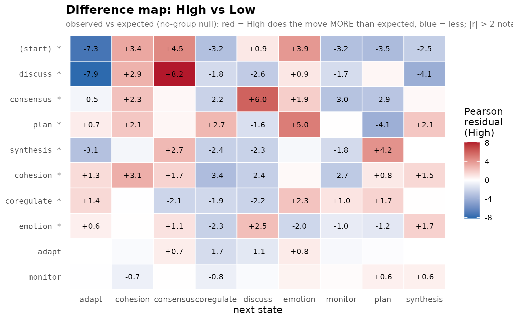

Comparing groups
Written by Mohammed Saqr and Sonsoles López-Pernas
Source:vignettes/comparing-groups.Rmd
comparing-groups.RmdMany questions about sequential behavior are comparative. Do high and low achievers regulate their collaboration in the same order? Do students who persist move between engagement states differently from those who drop out? Two groups can use the same states at similar rates and still differ in what follows a given history, and they can also differ in how often they reach that history at all. These are distinct questions, and a single distance between two transition matrices conflates them.
A variable-order transition tree fitted to each group gives both
pieces of information for every context: the next-state distribution
and the number of times the context occurs. The
transitiontrees package compares groups on these two axes.
The behavioral axis asks whether, given the same
context, the groups predict a different next state; it is measured per
context by the Jensen-Shannon divergence between the groups’ next-state
distributions,
where is the Shannon entropy in bits and the count of the context in group . The usage axis asks whether the groups reach the context at different rates; it is measured by a homogeneity statistic on the context’s share of each group’s positions at the same depth. The reference distribution of every statistic is built by permuting the group labels of whole sequences, and per-context p-values are adjusted for multiplicity with the Benjamini-Hochberg procedure. The model itself is introduced in the variable-order transition trees vignette.
Data
group_regulation_long is an event log of collaborative
regulation: one row per action, 27,533 rows from 2,000 students.
-
Actor:
Actoridentifies the student whose actions form a sequence. -
Time:
Timeorders the actions; a gap of more than 15 minutes starts a new sequence. -
State:
Action, one of nine regulation moves (adapt,cohesion,consensus,coregulate,discuss,emotion,monitor,plan,synthesis). -
Group:
Achiever, the student’s achievement level (HighorLow), constant within a student. -
Stratum:
Course, the course the student took (A,BorC).
Achievement and course are related. The cross-tabulation of actions
by course and achievement level shows that course A
contains only high achievers, course C only low achievers,
and course B both.
xtabs(~ Course + Achiever, data = group_regulation_long)
#> Achiever
#> Course High Low
#> A 12390 0
#> B 1331 8295
#> C 0 5517Fitting one tree per group
Naming the group column in context_tree() fits one tree
per group over a shared alphabet and returns a
transitiontrees_group. The trees below hold contexts of one
action, which keeps the permutation tests fast; the collaborative
regulation case study compares deeper trees.
grp <- context_tree(group_regulation_long,
actor = "Actor", time = "Time", action = "Action",
group = "Achiever", max_depth = 1, min_count = 10)
grp
#> <transitiontrees_group> 2 groups
#> High 10 nodes, depth <= 1, 1000 seq, 13721 obs
#> Low 10 nodes, depth <= 1, 1000 seq, 13812 obssummary() returns one row per group with the size and
fit of its tree.
summary(grp)
#> <transitiontrees_group summary> 2 groups
#>
#> group n_seq n_obs n_nodes max_depth pruned logLik df nobs AIC BIC perplexity
#> High 1000 13721 10 1 FALSE -23003 80 13721 46165 46768 5.35
#> Low 1000 13812 10 1 FALSE -23193 80 13812 46546 47148 5.36Each group contributes 1,000 sequences and about 13,700 actions. The two trees fit their own data about equally well: a perplexity of 5.35 for high achievers and 5.36 for low achievers, against nine possible actions.
state_frequencies() lists the shares of the actions in
each group.
state_frequencies(grp)
#> group state count proportion
#> 1 High consensus 3651 0.2661
#> 2 High plan 3102 0.2261
#> 3 High discuss 2166 0.1579
#> 4 High emotion 1686 0.1229
#> 5 High cohesion 1018 0.0742
#> 6 High coregulate 959 0.0699
#> 7 High monitor 668 0.0487
#> 8 High synthesis 316 0.0230
#> 9 High adapt 155 0.0113
#> 10 Low plan 3521 0.2549
#> 11 Low consensus 3146 0.2278
#> 12 Low discuss 2101 0.1521
#> 13 Low emotion 1389 0.1006
#> 14 Low coregulate 1174 0.0850
#> 15 Low monitor 848 0.0614
#> 16 Low cohesion 821 0.0594
#> 17 Low synthesis 413 0.0299
#> 18 Low adapt 399 0.0289High achievers use consensus most (26.6% of their
actions) and low achievers plan (25.5%). Low achievers use
adapt, monitor and synthesis more
often; high achievers use emotion and cohesion
more often.
Overall difference between two trees
compare_trees() tests whether two trees predict
differently overall. Its statistic is the count-weighted symmetric
Kullback-Leibler divergence between the trees’ next-state distributions,
in nats; the null distribution comes from refitting both trees after
reassigning the sequences at random to the two groups.
cmp <- compare_trees(grp, iter = 99)
summary(cmp)
#> <transitiontrees_comparison summary>
#> distance null_mean null_sd null_q95 p_value iter n_pathways
#> 0.0471 0.0029 0.000522 0.00367 0.01 99 10The observed distance of 0.0471 is many times the permutation mean of 0.0029 and exceeds every one of the 99 permuted distances, so the p-value is at its floor of . The per-context breakdown shows which histories contribute most.
as.data.frame(cmp, what = "pathways")
#> pathway count_a count_b divergence_ab divergence_ba divergence_sym
#> 1 synthesis 278 374 0.30009 0.31081 0.30545
#> 2 discuss 2003 1948 0.17777 0.20403 0.19090
#> 3 cohesion 938 757 0.11951 0.11497 0.11724
#> 4 adapt 141 368 0.04356 0.09434 0.06895
#> 5 consensus 3392 2937 0.04993 0.04583 0.04788
#> 6 coregulate 894 1076 0.04552 0.04714 0.04633
#> 7 plan 2892 3265 0.04178 0.03591 0.03884
#> 8 emotion 1550 1287 0.03462 0.03462 0.03462
#> 9 (start) 13721 13812 0.01956 0.02204 0.02080
#> 10 monitor 633 800 0.00524 0.00533 0.00529What follows synthesis differs most between the groups
(a symmetric divergence of 0.305), then what follows
discuss (0.191) and cohesion (0.117). What
follows monitor hardly differs (0.005).
Behavioral and usage differences
compare_groups() separates the two axes, tests every
context, and works for any number of groups. summary()
reduces the result to one row with a verdict.
cg <- compare_groups(grp, iter = 99)
summary(cg)
#> Group comparison: High vs Low (10 contexts, 99 permutations)
#> behavioral omnibus: JSD = 874.104 bits, p = 0.010
#> usage omnibus : G2 = 282.97, p = 0.010
#> pathways with a behavioral difference (adjusted p < 0.05): 8
#> pathways with a usage difference (adjusted p < 0.05): 8
#> pathways whose modal next state differs between groups: 4Both omnibus tests reach the permutation floor of 0.01: given the same preceding action the groups choose different next actions, and they also reach the preceding actions at different rates. Eight of the ten contexts, the root among them, show a behavioral difference after false discovery rate adjustment, and eight of the nine contexts with a usage test (the root has none) show a usage difference.
The omnibus table and the pairwise distance are available as data frames.
as.data.frame(cg, what = "omnibus")
#> axis statistic value p_value
#> 1 behavioral count-weighted JSD (bits) 874 0.01
#> 2 usage sum G^2 283 0.01
as.data.frame(cg, what = "distance")
#> group_a group_b distance
#> 1 High Low 0.0471The behavioral statistic is the count-weighted sum of the per-context
divergences, 874 bits; the usage statistic is the sum of the per-context
values, 283. The pairwise distance is the compare_trees()
statistic, 0.0471.
The per-context table gives the counts, the modal next action in each
group, whether the modal actions differ (flips), and both
tests with raw and adjusted p-values.
as.data.frame(cg, what = "pathways")
#> pathway depth count_total count_High count_Low modal_High modal_Low flips jsd_bits
#> 1 synthesis 1 652 278 374 consensus consensus FALSE 0.10220
#> 2 discuss 1 3951 2003 1948 consensus discuss TRUE 0.06557
#> 3 cohesion 1 1695 938 757 consensus consensus FALSE 0.04285
#> 4 consensus 1 6329 3392 2937 plan plan FALSE 0.01696
#> 5 coregulate 1 1970 894 1076 plan discuss TRUE 0.01639
#> 6 adapt 1 509 141 368 consensus consensus FALSE 0.01536
#> 7 plan 1 6157 2892 3265 plan plan FALSE 0.01365
#> 8 emotion 1 2837 1550 1287 consensus cohesion TRUE 0.01349
#> 9 (start) 0 27533 13721 13812 consensus plan TRUE 0.00739
#> 10 monitor 1 1433 633 800 discuss discuss FALSE 0.00188
#> jsd_p jsd_padj usage_g2 usage_p usage_padj
#> 1 0.01 0.0125 13.86 0.01 0.0112
#> 2 0.01 0.0125 1.43 0.21 0.2100
#> 3 0.01 0.0125 22.14 0.01 0.0112
#> 4 0.01 0.0125 47.94 0.01 0.0112
#> 5 0.01 0.0125 16.87 0.01 0.0112
#> 6 0.08 0.0889 105.31 0.01 0.0112
#> 7 0.01 0.0125 26.39 0.01 0.0112
#> 8 0.01 0.0125 29.61 0.01 0.0112
#> 9 0.01 0.0125 NA NA NA
#> 10 0.88 0.8800 19.42 0.01 0.0112After discuss, high achievers most often move to
consensus and low achievers continue to
discuss. After coregulate the modal action is
plan for high achievers and discuss for low
achievers, and after emotion it is consensus
against cohesion. synthesis has the largest
behavioral divergence (0.102 bits) although both groups most often
follow it with consensus; the difference lies in the rest
of the distribution. monitor (adjusted p = 0.88) and
adapt (0.089) show no behavioral difference, and
discuss is the one context with no usage difference
(adjusted p = 0.21). adapt differs in usage
(
= 105) more than any other action but not in what follows it.
Where the groups differ
plot_difference() draws one row per context and one
column per next action. Each cell is the Pearson residual of the first
group against the no-difference null, so red cells are transitions high
achievers make more often than expected and blue cells transitions they
make less often. With comparison = cg, contexts whose
behavioral difference survives the adjustment are starred.
plot_difference(grp, comparison = cg)
The largest residuals sit in the discuss row: after
discussing, high achievers move to consensus more often
than expected (+8.2) and to adapt less often (-7.9). High
achievers also move from consensus to discuss
(+6.0) and from plan to emotion (+5.0) more
often, and from synthesis to plan (+4.2). The
adapt and monitor rows are pale and unstarred:
what follows these actions does not differ between the groups.
Stratified permutation
The permutation tests above reassign achievement labels freely across
all students. Because course A contains only high achievers
and course C only low achievers, part of the observed
difference may be a difference between courses. Naming
Course as block restricts the permutation to
reassign labels only within each course, so the null distribution keeps
the course composition of each group fixed. The block is stored on the
fitted object, and compare_groups() uses it without further
arguments. The same argument handles repeated measures: with several
sequences per person, block set to the person column keeps
each person’s sequences together in the null.
grp_course <- context_tree(group_regulation_long,
actor = "Actor", time = "Time", action = "Action",
group = "Achiever", block = "Course",
max_depth = 1, min_count = 10)
cg_course <- compare_groups(grp_course, iter = 99)
summary(cg_course)
#> Group comparison: High vs Low (10 contexts, 99 stratified permutations)
#> behavioral omnibus: JSD = 874.104 bits, p = 0.010
#> usage omnibus : G2 = 282.97, p = 0.010
#> pathways with a behavioral difference (adjusted p < 0.05): 6
#> pathways with a usage difference (adjusted p < 0.05): 4
#> pathways whose modal next state differs between groups: 4The observed statistics are unchanged, and both omnibus tests remain at the permutation floor. The per-context results are more conservative: six contexts keep a behavioral difference and four a usage difference.
as.data.frame(cg_course, what = "pathways")
#> pathway depth count_total count_High count_Low modal_High modal_Low flips jsd_bits
#> 1 synthesis 1 652 278 374 consensus consensus FALSE 0.10220
#> 2 discuss 1 3951 2003 1948 consensus discuss TRUE 0.06557
#> 3 cohesion 1 1695 938 757 consensus consensus FALSE 0.04285
#> 4 consensus 1 6329 3392 2937 plan plan FALSE 0.01696
#> 5 coregulate 1 1970 894 1076 plan discuss TRUE 0.01639
#> 6 adapt 1 509 141 368 consensus consensus FALSE 0.01536
#> 7 plan 1 6157 2892 3265 plan plan FALSE 0.01365
#> 8 emotion 1 2837 1550 1287 consensus cohesion TRUE 0.01349
#> 9 (start) 0 27533 13721 13812 consensus plan TRUE 0.00739
#> 10 monitor 1 1433 633 800 discuss discuss FALSE 0.00188
#> jsd_p jsd_padj usage_g2 usage_p usage_padj
#> 1 0.01 0.0167 13.86 0.01 0.0225
#> 2 0.01 0.0167 1.43 0.31 0.3100
#> 3 0.01 0.0167 22.14 0.13 0.1671
#> 4 0.01 0.0167 47.94 0.01 0.0225
#> 5 0.04 0.0571 16.87 0.26 0.2925
#> 6 0.24 0.2667 105.31 0.01 0.0225
#> 7 0.01 0.0167 26.39 0.04 0.0720
#> 8 0.05 0.0625 29.61 0.01 0.0225
#> 9 0.01 0.0167 NA NA NA
#> 10 0.45 0.4500 19.42 0.06 0.0900coregulate and emotion, two of the contexts
whose modal next action differs between the groups, no longer pass the
behavioral adjustment (adjusted p = 0.057 and 0.062), and the usage
differences after cohesion, coregulate,
plan and monitor are no longer significant.
The behavioral differences after synthesis,
discuss, cohesion, consensus and
plan remain under a null that holds the course composition
of each group fixed.
Assumptions
- Sequences are exchangeable under the null hypothesis, within blocks
when
blockis given. - With
block, only blocks that contain more than one group contribute to the permutation; here only courseBdoes. - The tested contexts are those in the fitted trees; a context rarer
than
min_countin every group is not tested. - Weighted trees cannot be compared, because the permutation refits from the raw sequences.